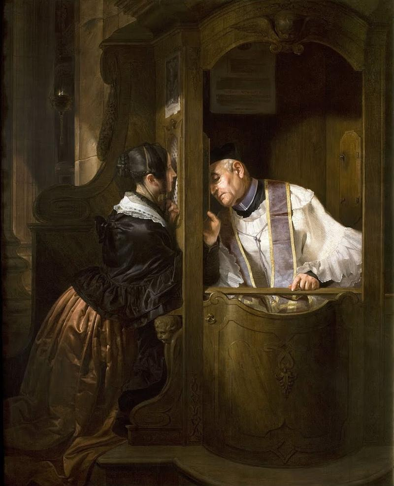
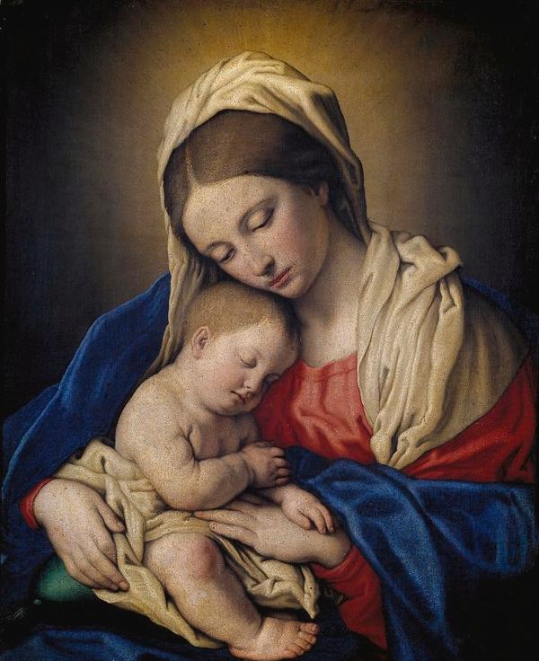
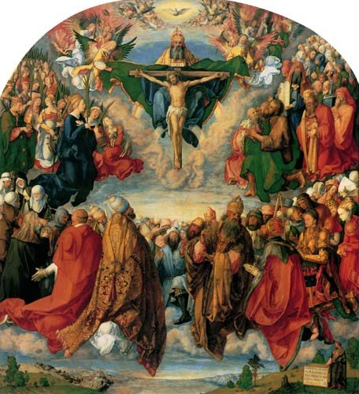
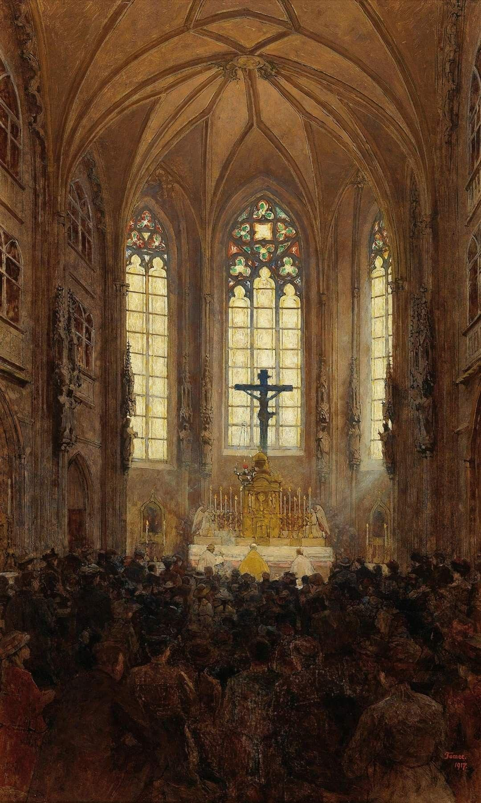

Saku Doa-mu
Berdoa Rosario langkah demi langkah dan temukan doa-doa Gereja dalam bahasa Indonesia dan Latin.
Doa RosarioKumpulan DoaEmpat Peristiwa Rosario
Renungkan hidup Yesus bersama Bunda Maria sesuai jadwal setiap hari.
Doa-doa Gereja
Doa harian, doa kepada Bunda Maria, madah Ekaristi, dan doa untuk arwah.

Bersiap untuk Pengakuan Dosa
Periksa batin dengan panduan pertanyaan, pelajari tata cara pengakuan, lalu doakan Doa Tobat untuk menyatakan penyesalan dan niat memperbaiki hidup. Bisa juga dipakai untuk refleksi pribadi setiap malam.
Pemeriksaan Batin Doa TobatMalaikat Tuhan
Tradisi Gereja mengajak kita berhenti sejenak pada pukul 06.00, 12.00, dan 18.00 untuk mengenang kabar gembira bahwa Sabda telah menjadi daging.
Doakan Malaikat Tuhan
Requiem Aeternam
V. Berilah mereka istirahat kekal, ya Tuhan.
R. Dan sinarilah mereka dengan cahaya abadi.
V. Semoga mereka beristirahat dalam damai.
R. Amin.
Mendoakan yang Telah Mendahului Kita
Gereja mengajak kita mengenang dan mendoakan jiwa-jiwa orang beriman yang telah meninggal, terutama keluarga dan sahabat kita, agar mereka beroleh istirahat kekal dalam kerahiman Allah.
Doa untuk Arwah
Temukan Gereja Katolik di Sekitar Anda
Ingin mengikuti Misa, mengaku dosa, atau berdoa di depan Sakramen Mahakudus? Cari gereja dan kapel Katolik terdekat lengkap dengan alamat dan rutenya.
Cari Gereja Katolik TerdekatMembuka Google Maps. Izinkan akses lokasi agar hasilnya sesuai tempat Anda. Jadwal Misa dan pengakuan dosa sebaiknya dicek di warta atau media sosial paroki.
